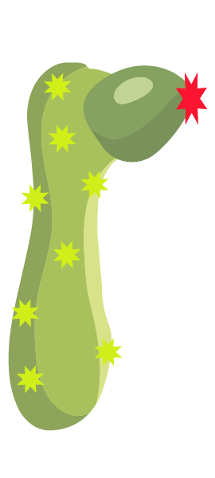
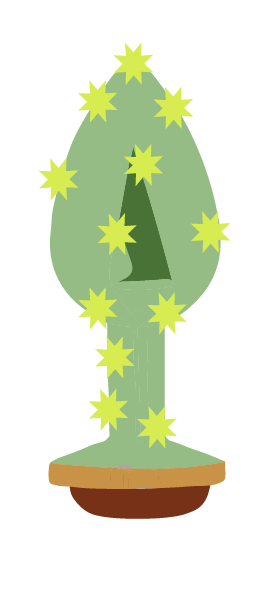
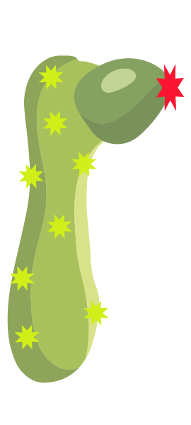
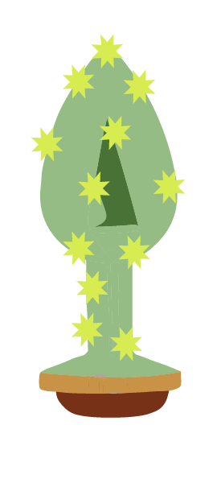

I dette tema blev vi introduceret til sidste del af front-end kodning, nemlig Javascript. Vi stillet opgaven at designe og bygge en klik-spils-kode fra start til slut. Vi lærte vi om vektorbaseret (SVG) grafik i illustrator, hvor hele designet f.eks. UI-elementer, spilskærme og knapper blev til. Vi lærte forskellen på, og nytten bag, layout- og State Machine diagrammer. Gennem øvelser lærte vi forskellige animationer at kende, samt at redigerer lyd i Adobe programmet Audition.
Indledelsesvis gik research- og idéfasen i gang. Her blev vi introduceret til forskellige idégenereringsmetoder hvor vi bl.a. spillede allerede eksisterende klikspil samt sammensatte vilkårlige ord, steder og temaer som udgangspunkt for brainstorms på tid. Her beskrev vi en masse hurtigere idéer, nogle gode, andre mindre gode. Vi skitserede og forklarede vores idéer i grupper, hvor vi fik mulighed for at få inspiration og give hinanden feedback. Vi sammenfattede et moodboard og en beskrivelse af vores inspiration til vores design. Mit moodboard trak inspiration fra GTA-spillene, dog gjort mere flat for ikke at benytte stroke. Spilkonceptet jeg landede på, handlede om at klikke på de ”gode” elementer, dildoerne og undgå de ”onde” elementer, nemlig kaktusserne. Her lavede jeg en papirs-prototype, hvor jeg tydeligere kunne se hvad endemålet ville være. Brugerens rejse gennem spillet blev her tydeliggjort gennem et layoutdiagram, der visuelt beskrev handlingsforløbet fra spillets startside, til spillets slutside. På dette tidspunkt i processen var det tydeligt at alle var bidt af det visuelle arbejde, men Peter var stædig med State-Machine-Diagrammet - noget vi takkede Peter for senere i processen. Dette diagram beskriver også spillets forskellige States, interne aktiviteter og transitions – som alt sammen er behjælpeligt undeer under selve kodningen. Spillet blev bygget op omkring Eventlisteners-metoden, hvor man kunne tilføje aktiviteter til forskellige elementer. Vi brugte ligeledes "classList.add" samt "classList.remove", hvor vi kunne tilføje eller slette klasser fra Javascript til CSS. Her kunne vi styre animationer og lag på de forskellige sider på websitet. Vi brugte ydermere if/else statements, for at styre spillets udvikling. Disse spotter om forskellige betingelser er opfyldt, der så anvender funktioner eller ændre attributter. Til slut lærte vi grundlæggende at beherske Adobe-programmet Audition. Vi lærte her om støjbehandling.
 



Frem for alt fik jeg en grundlæggende forståelse for Javascript. Java-kodning samt kodeopsætningen er for mig en smule indviklet, så jeg er spændt på få en dybere forståelse sproget. Gennem jeg relativt store designudfordring har jeg fået en god fornemmelse og intuitiv tilgang til programmet Illustrator. Idéfasen samt den grafiske del af opgaven har for mig været den mest givende, hvor jeg virkelig fik følelsen af at lade kreativiteten flyde. Jeg brugte her mange inspirerende timer. Kodningsfasen var helt klart var mig ret besværlig.